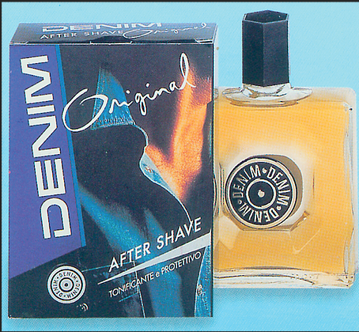

Denim was founded in 1976 as a fragrance brand designed specifically for men who want a distinct and long lasting fragrance.
We first launched our renowned Aftershave and Deodorant Body Spray in three variants -
Original
Black
Musk
Today, we boast a complete personal care line, ranging from fragrances to shaving products, formulated to empower men to be comfortable in their own skin.
In the personal care scene, denim represents an iconic brand, which since the first years of its launch has entered everyday use and in the collective imagination thanks to attractive and engaging communication campaigns
FOR MEN
------
WHO DON'T HAVE TO TRY TOO HARD
Our History

1976 — The Denim ‘Concept’ was created by FABERGÉ
1978 — Unilever launches the Aftershave Original in Italy
1980 — Sponsorship in Formula 1
1981 — Denim runs commercials on TV, with an iconic video that made the history of TV advertising in the 80s - famous for the slogan:
“Per l’uomo che non deve chiedere, mai"
“For the man who must not ask, ever"
1982 — The new Musk fragrance is presented, both as after shave and cologne. Sponsorship in the world of Formula 1 reaches the first of a series of important successes: Michele Alboreto wins the GP in Las Vegas
1983 — Denim Sponsor the Williams Team that wins the Formula 1 world championship
1984 — Denim becomes a Market leader For Aftershave and Deodorant. TV campaign for Aftershave Musk.
1986 — New fragrances are launched while the sponsorship in F1 remains strategic
1990-1994 — Denim broadens the range with the launch of the Shower gel and completes the range of products for men
1995 — the new Cult fragrance is launched with an impactful advertising campaign
1996 — Aftershave Balm is launched for men looking for a more delicate and caring product
1998 — Denim presents the new Silver fragrance
2000 — A complete and modern restyling of the pack from a Denim a new impulse in the market
2004 — Codaa acquires the Denim brand and continues production in Italy.
2005 — New version of the famous spot Denim After shave Original
2006 — Launch of Denim Black, a new virile fragrance with a strong personality. Sponsorship of Jarno Trulli from the Toyota F1 team and Dando Capello from the Audi team
 CONTACT US
CONTACT US